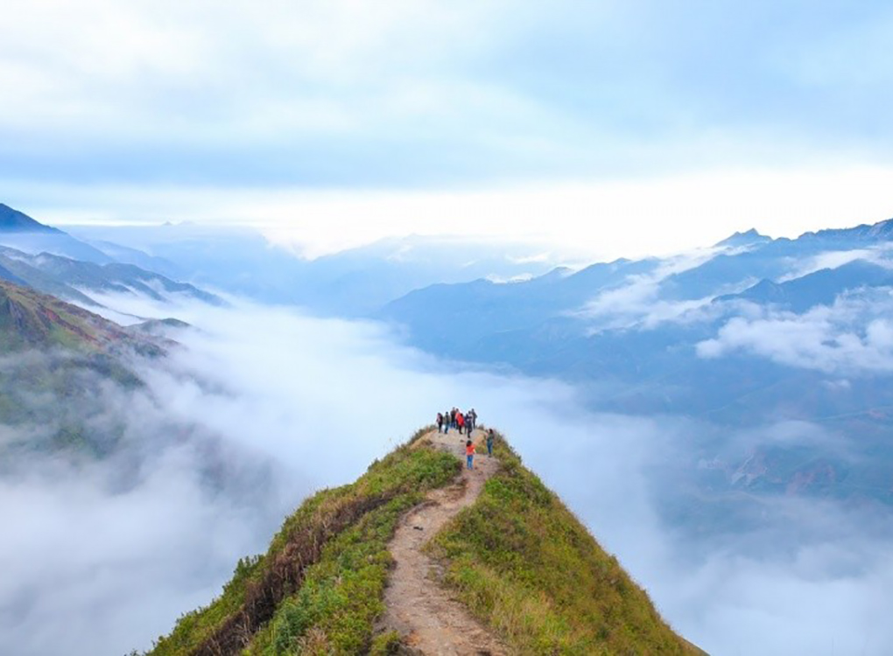
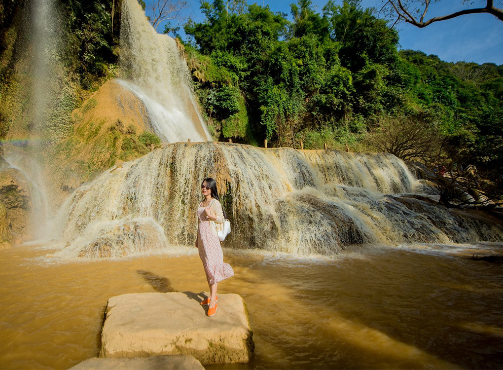

Tour Hà Nội - Đỉnh Pha Luông huyền thoại 2 ngày 1 đêm
1.880.000 vnđ
Giới Thiệu
Một trong những điểm đến mang nhiều cảm hứng khám phá, trải nghiệm cho nhiều bạn trẻ trong thời gian gần đây đó chính là đỉnh Pha Luông huyền thoại. Dãy núi Pha Luông, thuộc xã Lóng Sập, huyện Mộc Châu, tỉnh Sơn La quanh năm mờ ảo trong sương. Có ai đó từng đến với Pha Luông nói rằng, ngọn núi ấy là nàng công chúa đã được đánh thức sau cơn ngủ dài dằng dặc với mây ngàn. 
2 năm trở lại đây, các tour chinh phục Pha Luông đã được chọn như điểm khám phá “quyến rũ” du khách trở về Mộc Châu.

Đoàn di chuyển đến Chiềng Đi, quý khách dừng chân và chụp ảnh bên những cánh đồng hoa cải, hoa đào mận, và hoa tam giác mạch rỡ và đầy màu sắc núi rừng (Thời gian tháng 10 – tháng 2).
Lịch Trình
NGÀY 01: HÀ NỘI – MỘC CHÂU (ĂN TRƯA, TỐI)
6h00: Xe và HDV của công ty đón quý khách tại Nhà Hát Lớn Hà Nội, khởi hành đi Mộc Châu. Quý khách sẽ có những phút giây thư giãn, ăn sáng, uống nước để chuẩn bị tốt cho chuyến đi sắp tới. Trên đường đi đoàn dừng chân và nghỉ ngơi và chụp ảnh tại đèo Thung Khe – Hòa Bình hay còn được gọi là đèo Đá Trắng, được dân tình ca ngợi là “ Châu u của Hòa Bình”. Điểm đặc biệt là thời tiết ở đây khá thú vị. Trên đèo Đá Trắng, một ngày bạn có thể được trải nghiệm đủ 4 mùa trong năm. Xe tiếp tục đưa đoàn di chuyển lên thị trấn Mộc Châu.
12h00: Đoàn ăn trưa tại nhà hàng với những món ăn mang đậm hương vị vùng cao. Sau bữa trưa, quý khách về khách sạn nhận phòng nghỉ ngơi.
13h00: Xe đưa Quý khách tham quan thác Dải Yếm hay còn gọi là thác Nàng, thác Bản Vặt, nhằm ví vẻ đẹp của thác nước như xuân sắc của người con gái tuổi trăng tròn. Dưới chân thác là cả một khoảng rộng mênh mông nước và vô vàn những mô đá nhấp nhô dọc theo bờ suối còn có rất nhiều những tảng đá bằng phẳng, những thảm thực vật xanh mướt, những cây cổ thụ to hơn một người ôm và các cây dây leo mọc đan xen nhau thành từng tầng hoà quyện vào dòng chảy. Quý khách tự do trải nghiệm (chi phí tự túc) cầu kính Mộc Châu- Cây cầu kính này có chiều dài 100m, treo lơ lửng trên độ cao 20m với tên gọi Cầu Tình Yêu hoặc Đường trượt zipline Mộc Châu giúp người chơi lướt qua thác Dải Yếm với góc nhìn toàn cảnh của thác Dải Yếm, cầu Tình Yêu, núi rừng hung vĩ.
Tiếp theo, xe đưa Quý khách tham quan Khu du lịch Mộc Châu Happy Land – nơi đây nằm giữa một thung lũng rộng lớn ở bản Lùn, xung quanh là những triền núi trắng muốt, phía dưới một chút có dòng suối Sập chảy từ bên Lào về, nước trong vắt,... tất cả hòa trong một không gian đẹp, cuốn hút và làm say lòng du khách. Đến đây, Quý khách sẽ được chào đón bằng những thảm hoa rực rỡ và khóm hoa hình trái tim được trồng từ nhiều loại hoa khác nhau, trong đó có những loại hoa đặc trưng vùng Tây Bắc. Ngoài ra, du khách còn có thể tham gia vào trò chơi Zorbing vui nhộn: bóng lăn mặt cỏ, bóng lăn mặt nước, bóng đụng... (Chi phí tự túc).
18h00: Quý khách di chuyển ra nhà hàng, ăn bữa tối đồ nướng giữa không khí se lạnh của vùng cao Tây Bắc.
NGÀY 02: MỘC CHÂU - PHA LUÔNG – HÀ NỘI (ĂN SÁNG, TRƯA)
04h30: Quý khách dậy sớm trả phòng và ăn sáng, chuẩn bị đồ đến với hành trình Trekking Pha Luông.
05h00: Cả đoàn lên xe di chuyển vào đồn biên phòng Pha Luông. Khi tới đập tràn cách đồn biên phòng khoảng 3,5km, xe ô tô không đi vào được nữa, cả đoàn sẽ đi bộ tới đồn biên phòng (Hoặc thuê xe ôm của người dân bản địa chở vào đồn biên phòng – chi phí 50.000/ người/ lượt).
07h00: Đoàn bắt đầu trekking, quãng đường lên đỉnh khoảng 7km, quý khách sẽ được trải nghiệm thực thụ đúng chất 1 dân du lịch khám phá, đi qua những cánh đồng của dân bản, những cánh rừng với nhiều địa hình, thực vật đa dạng và cùng chinh phục những cung đường dốc trơn của núi rừng Pha Luông - nơi ranh giới giữa 2 nước Việt – Lào, cùng nhau chiêm ngắm những vẻ hoang sơ suối, rừng, đồng vật tại nơi đây.
10h00: Chinh phục thành công Đỉnh Pha Luông huyền thoại, nơi du khách có thể cảm nhận vẻ đẹp hùng vĩ của núi rừng, nhìn rõ ranh giới của 2 nước. Nếu may mắn chúng ta sẽ bắt gặp được biển mây như một nơi tiên cảnh mà các dân du lịch trong nước đều khao khát một lần thưởng thức. Quý khách tự do chụp hình và nghỉ ngơi khoảng 1 tiếng, sau đó quay về điểm nghỉ.
13h00: Đến điểm nghỉ trưa, đoàn ăn trưa và nghỉ ngơi trước khi quay về Hà Nội.
14h30: Quý khách đi bộ xuống điểm chờ của xe ô tô. Xe sẽ đón đoàn và lên đường về Hà Nội.Trên đường về, quý khách sẽ được ghé qua Mộc Châu Farm, siêu thị đặc sản Mộc Châu uy tín chất lượng, tham khảo 1 số đặc sản mua về làm quà.
21h00 : Đoàn có mặt tại Hà Nội, chia tay đoàn, kết thúc chuyến trekking khám phá Pha Luông.
Dịch Vụ
GIÁ BAO GỒM:
- Xe Ô tô du lịch đời mới đưa đón suốt hành trình.
- HDV kinh nghiệm, nhiệt tình suốt hành trình.
- Nghỉ đêm tại khách sạn 3*, 2 khách/ phòng, lẻ nam nữ ngủ phòng 3 khách.
- Ăn uống theo chương trình (Bữa chính 150.000đ/ khách/ bữa; Ăn sáng 30.000đ/ khách/ bữa, 1 bữa ăn nhẹ.)
- Bảo hiểm du lịch suốt tuyến, mức cao nhất 50.000.000đ/ người/ vụ:
- Chi phí làm thủ tục với biên phòng.
- Vé thăm quan theo lịch trình tour.
KHÔNG BAO GỒM:
- Chi phí cá nhân.
- Tiền tip lái xe, HDV.
- VAT.
- Vé tắm khoáng nóng Ban Mai retreat.